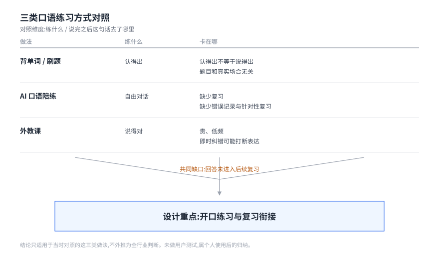
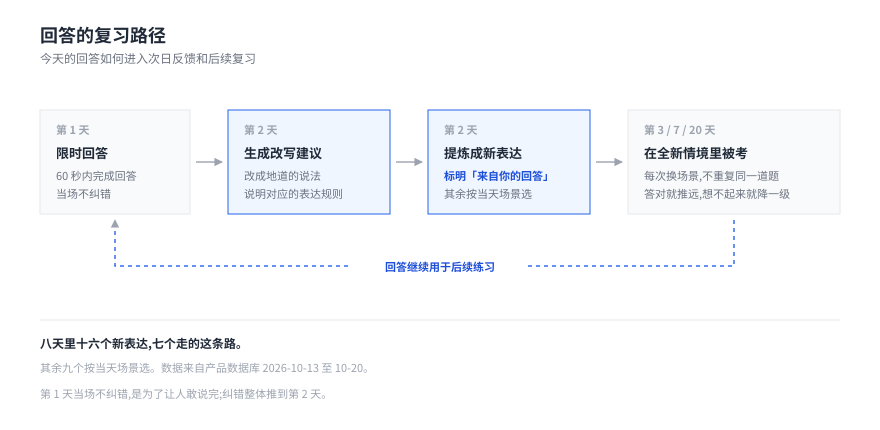
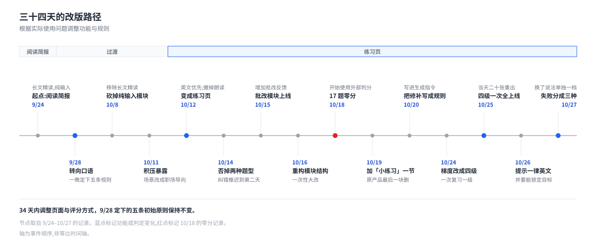
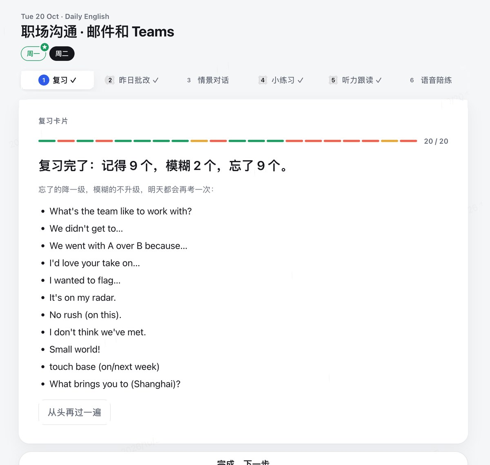
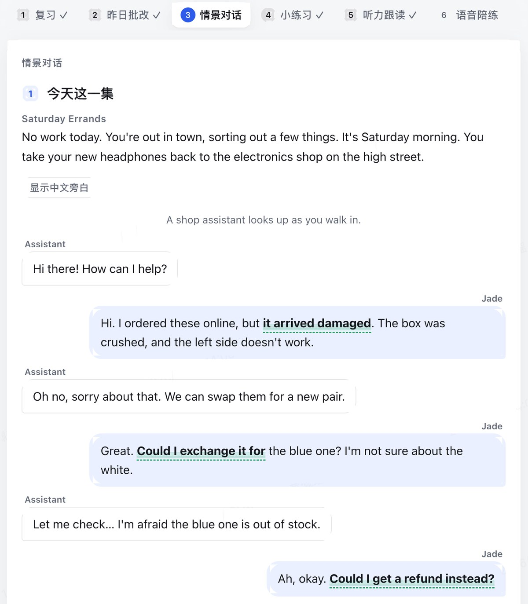
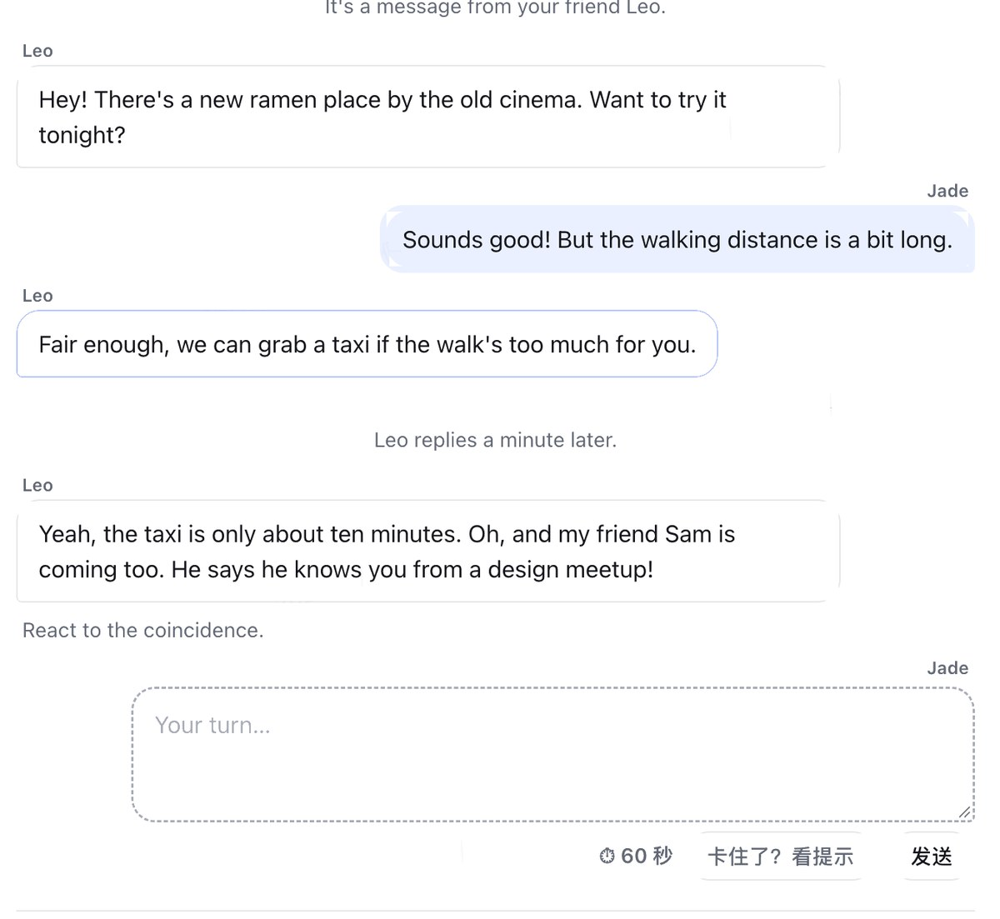
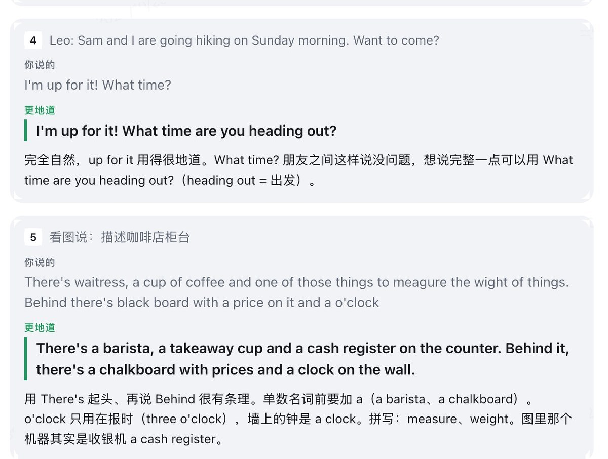
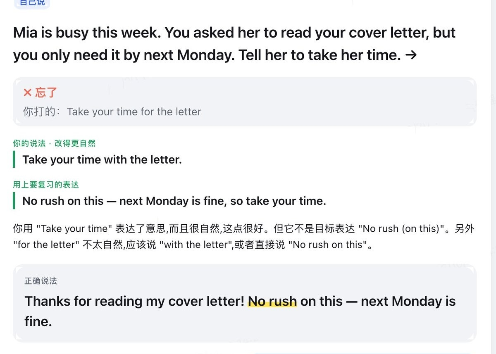
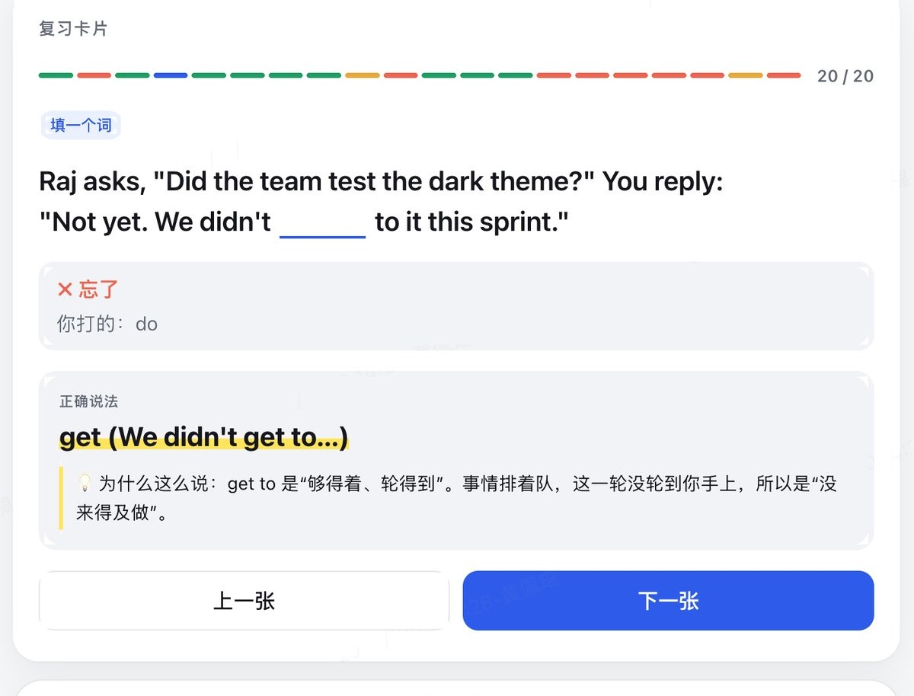
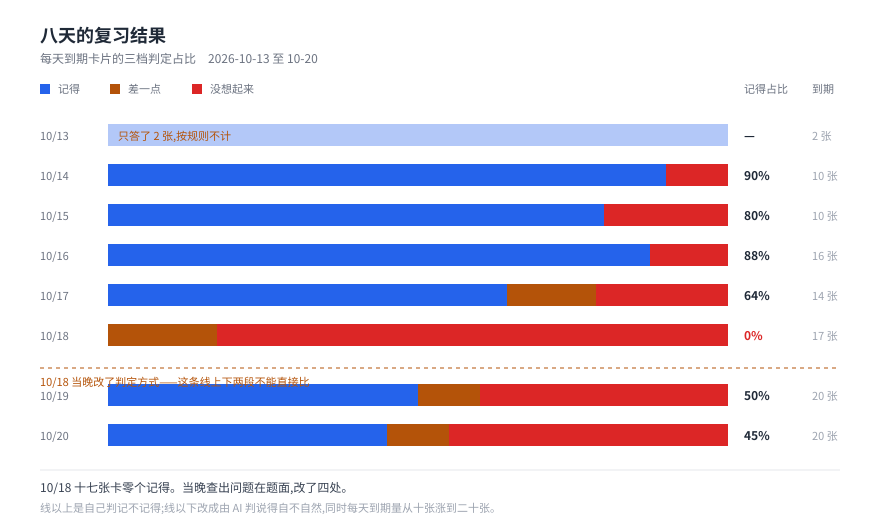

12 张 16:9 页面,看结构和字级层次用的。文案是正文初稿,图是最终 SVG,P8 两页是去过水印的真实界面,图 5 单独占一张。全书统一 PingFang SC,配图色板沿用规范第 6 节。
一个给自己做的英语口语练习产品。每天自动生成一期,十五到二十分钟做完,内容长在我昨天说错的话上。
三件事从一开始就互相拧着,不是做得好看一点就能解决的。
第二条是开工前三周就提出来的疑问,十三天后真的发生了。当时给的答案不够。

三类做法各自卡在一处,缺的是同一样东西:说完之后,这句话去了哪里。
所以要有一条回路,把说错的话变成明天的课本。

最早的版本是一份十五分钟的精读简报。读的时候很有收获感,一个月后开口还是一样卡。
| 决策 | 采用 | 排除 | 排除理由 |
|---|---|---|---|
| 01 整个产品改向 | 砍掉长文精读与新闻简报 | 保留阅读作为输入基础 | 输入会上瘾,因为它不难受 |
| 02 绝不展示错误的英文 | 只示范地道说法 | 常见错误对照表 | 每见一次错句子,就是给错的版本投一票 |
| 03 场景按岗位排 | 按一周真实工作排 | 教材的话题分类 | 用不到的场景,学了也不会用 |
第 02 条后来否掉了一个已经想做的方案:选择题。三个选项要么都成立,要么得编造不地道的英文当干扰项——那正好违反它自己。
每天新增 M 个、每个复习 N 次,稳定下来每天到期就是 M×N。这跟努不努力没关系。
| 决策 | 采用 | 排除 | 排除理由 |
|---|---|---|---|
| 04 间隔重复 + 自动维护 | 按遗忘曲线排,表由系统维护 | 自己标记"记住了" | 需要手动维护的表,最后都会停更 |
| 05 积压靠砍新增解决 | 新增量跟着积压走 | 只调高每日上限 | 调上限不改变 M×N,只是把问题推后 |
| 06 每次复习换新情境 | 换场景考,保留历次答案 | 固定题面重复出现 | 固定题面练的是认题,不是用词 |
第 05 条试了三轮才落到根因上:先降上限、不收敛;再接受积压;最后才回头砍新增。
这一页记的是失败路径。三样都做完了、用过了,然后被推翻。
留着那套关掉的代码,是为了记得它为什么不行。
9/28 那一晚定下五条:只示范地道说法、按岗位排场景、用遗忘曲线、表不用手动维护、控制总时长。二十七天里产品从一份阅读简报变成一个练习页,这五条一条没动过。

每次改向都是先发现自己学不会才动手,不是看到更好的做法才动手。后期的改动也越来越多是在写规则而不是改一次。
前面讲的规则,到这里要能看见。三张截图是同一天同一集连着截的。






判分的那一次看不见页面上的图,也不知道要我绕开哪个词。解法是把这两样跟题目一起交过去——参考答案于是从「标准答案」降级成「告诉判分者现场有什么」。同一类耦合在 10/20 又咬了一次:提示词和开场白对不上,前两次猜的原因都不对,最后定位到的是我自己——我的回答改变了剧情,提示词却没跟着改。
10/14 的记得率 90%,10/20 是 45%,可这两天记得的个数都是九个。变的不是记性,是判分权——10/18 那一晚,判分从我手上交给了机器和 AI。
这组数字的边界:八天、一个人、没有对照组,它证明不了方法有效——只能证明口径一换,同一个人、同一套内容的数字会差一倍。有两天我没做完,图里照原样留着,没补算也没剔除。 没做成的:最该练的是嘴,但页面做不了语音,最后做成了一次交接。
